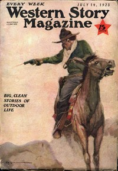

Ray Humphreys
Title Never saner Original Publication New York, NY: Street & Smith Corporation, 1923. Series Title Produced from Western Story Magazine, July 14, 1923.
Credits Prepared by volunteers at BookCove (bookcove.net) Language English LoC Class PS: Language and Literatures: American and Canadian literature Subject Short stories Subject Western stories Subject Cattle stealing -- Fiction Subject Gunfighters -- Fiction Category Text eBook-No. 79687 ISBN (HTML) 979-8-238-79687-1 Release Date 29 Sept 2026 Copyright Public domain in the USA. Downloads 1109 downloads in the last 30 days.